MOVIES THAT GIVE ME THAT SLIGHT THROAT LUMPY FEELING OFTEN ASSOCIATED WITH CRYING (NO TEARS 🙅🏼)
In order from least to most embarrassing.
-
Lost in Translation
When Charlotte calls Lauren and they don't connect.
-
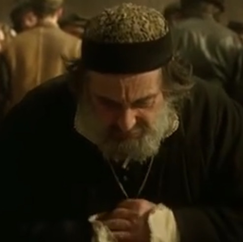
The Merchant of Venice
(The Al Pacino version) When Shylock, having been humiliated and fined, then has his faith and community stripped away.
-
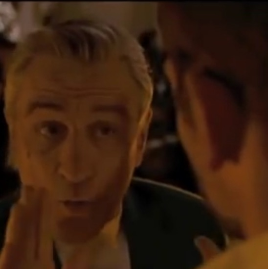
Silver Linings Playbook
When Pat's father says "when life reaches out with a moment like this it's a sin if you don't reach back."
-
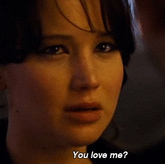
Silver Linings Playbook
When Tiffany asks, "You love me?"
-
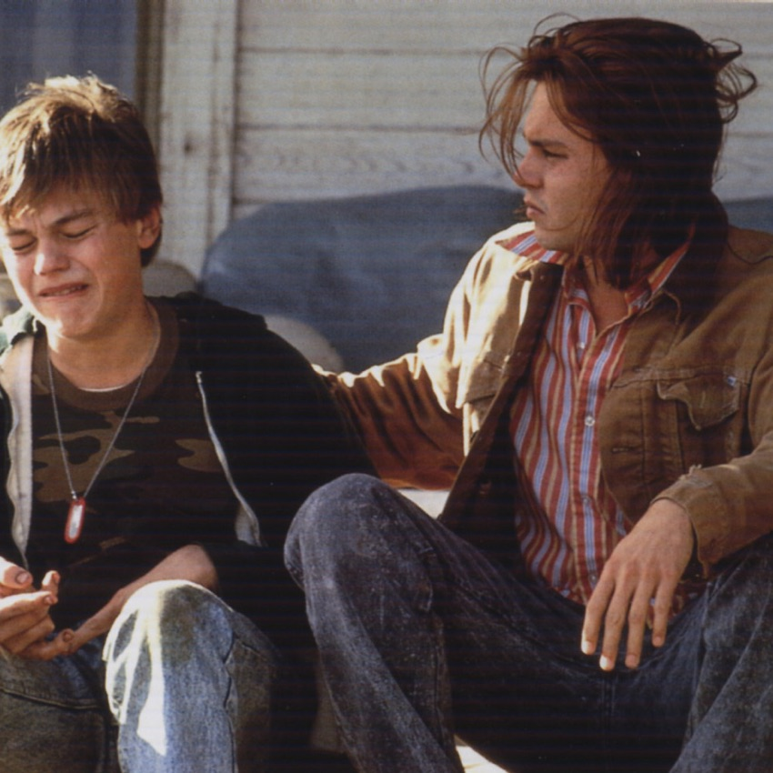
What's Eating Gilbert Grape
When Gilbert seeks forgiveness from Arnie and introduces Becky to his family.
-
The Iron Giant
When the Iron Giant sacrifices himself.
-
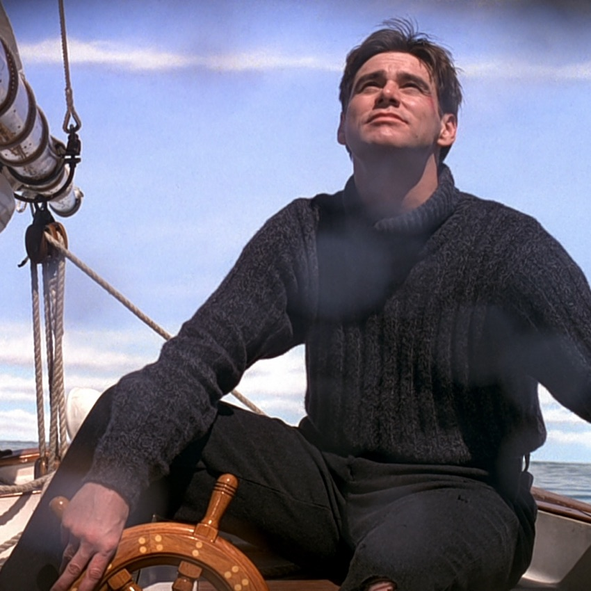
The Truman Show
When Truman ties himself to the boat.
-
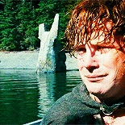
Lord of the Rings
When Sam says "I made a promise Mr. Frodo."
-
Brave
When Merida admits she is wrong, takes responsibility, expresses her love, and believes she has failed.
-
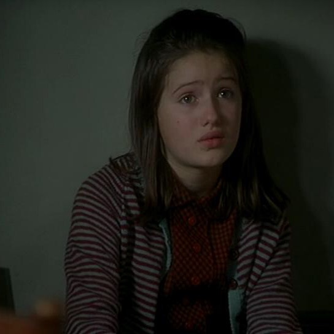
Chocolat
When Anouk apologizes for spilling the ashes and tries to clean them up.
-
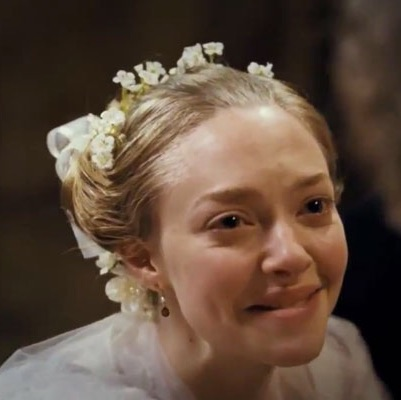
Les Miserables
When Cosette and Marius return to Jean Valjean.
-
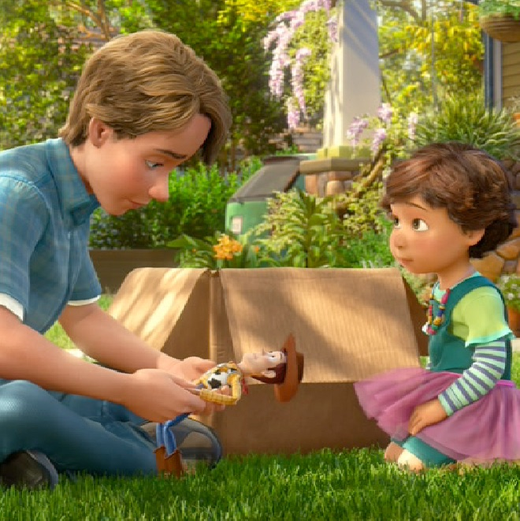
Toy Story 3
When Andy plays with Bonnie, and with his toys one last time.
-
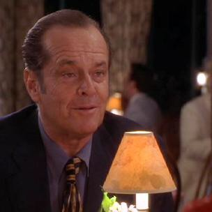
As Good as it Gets
When Melvin says "you make me want to be a better man."
-
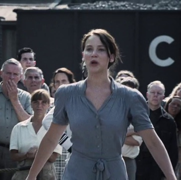
Hunger Games
When Katniss volunteers as tribute.
-
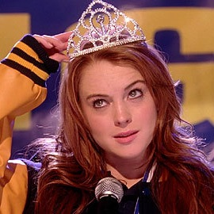
Mean Girls
When Cady shares the crown.